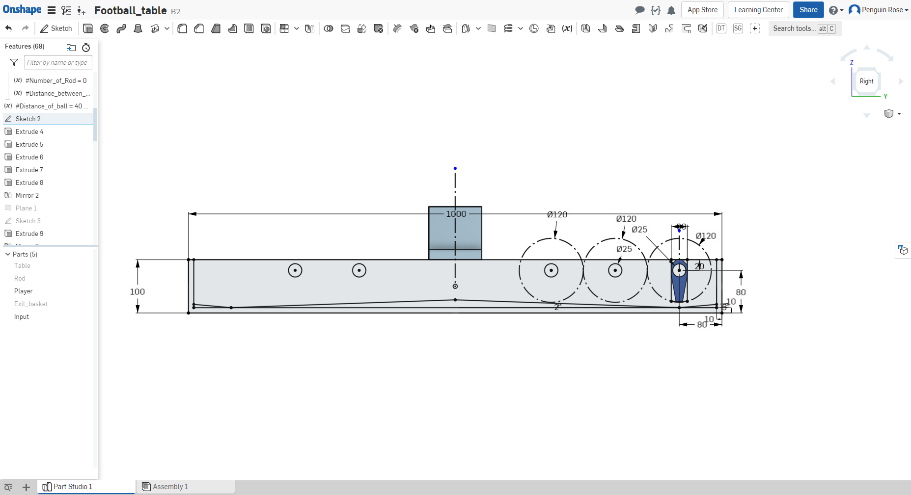
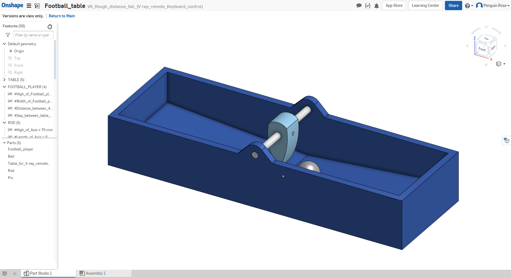
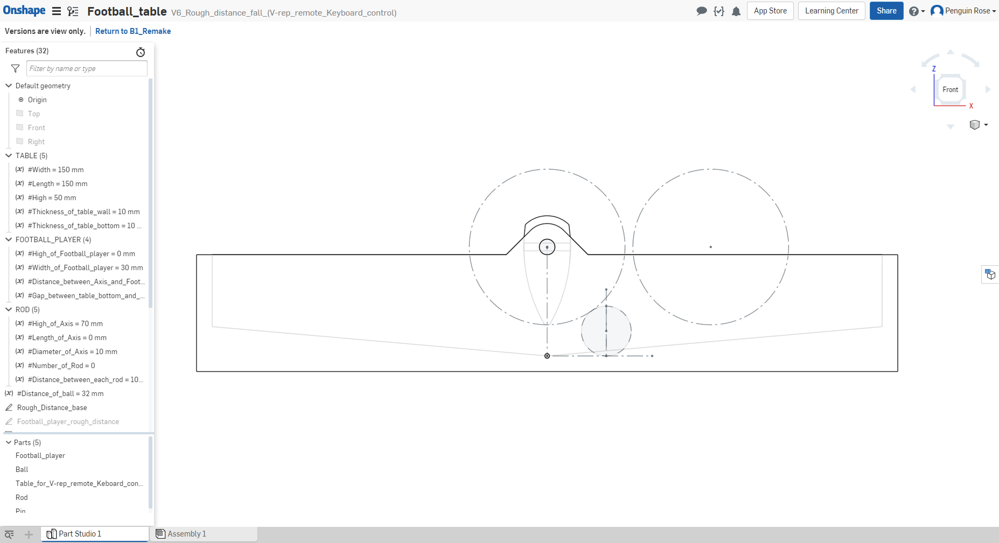

零組件尺寸分析 <<
Previous Next >> 細部設計與 BOM
參數設計與繪圖
手足球系統的零組件參數設計與繪圖 (零組件初步設計繪圖)
Onshape 零組件連結
Onshape_Football_table_V13
總體物件除了可以透過上述連結進入 Onshape 進行檢視以外，亦可由下方的側視圖了解，整體球檯在本次專案的設計規格以及其特徵。
可以發現球檯本面，主體特徵是中間較高向兩側逐漸遞減高度的傾斜面，在最後一球感的下方為最低點，並在由該位置向後為傾高度。注藥布地可以參見文章最後連結，造因於當初進行物件組立完成後考量擊球問題，在尚未有完整的收球、送球機構時，為讓靜止的球可以有動能，並且讓球員可以有向的操作「接戰」動作，歲設計傾斜球檯面，以未能轉換成動能的方式行有效的擊球動作測試。

Onshape_Football_table_V6
第一版本正是匯入 V-rep 進行測試。總體物件除了可以透過上述連結進入 Onshape 進行檢視以外，亦可由下方的側視圖了解，整體球檯在本次專案的設計規格以及其特徵。
和最終版本最大特徵不同在於，其傾些面的方向是由中間最低點向兩側延伸，以及吊籃式的球桿位置，再者還包含球員擊球面的曲面特徵等。目的主要為第一階段的測試程式做驗證，其目的是確保運動狀態對應的程式運作正常，以及對應宣告的修正。
其後測試過程中，除增加了球檯及球桿的總寬，目的為增加單一球桿的球員數量。在測試過程中逐一針對問題做物件特徵修正。其一為球員擊球面為曲面，使其在擊球過程有機會力量會通過球體形心(含質心)，其構成運動狀態的死點，遂在其後修正為憑質的倒角；其二為吊籃式的球桿位置，因吊籃式球桿位置在執行鏡射或是陣列時，其相對於直接在球檯面上建立位置顯得多餘，因此後續改版後除去；再者大小本身也增加了些，目的是除了在程式端增加擊球力道外，亦可透過球員本身的長度產生力矩上的助力。


(該物件規格在左側特徵樹下的 Variable，或是直接點及圖原本身，即會在右下角顯示規格)
國立虎尾科技大學_機械設計工程系_協同產品設計實習_40423217_V-REP_Football_table_P0_R1_V2_test_2019-0524-1536
國立虎尾科技大學_機械設計工程系_協同產品設計實習_40423217_V_rep_Football_player_P0_R2_V2_2019-0530-2234
零組件尺寸分析 <<
Previous Next >> 細部設計與 BOM